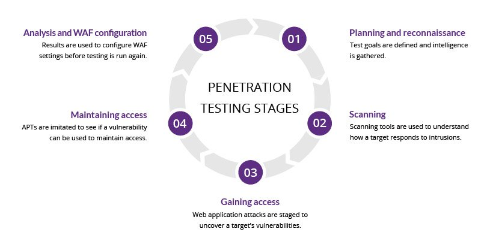

Penetration Testing :
Penetration testing, also called pen testing or ethical hacking, is the practice of testing a computer system, network or web application to find security vulnerabilities that an attacker could exploit. Penetration testing can be automated with software applications or performed manually. Either way, the process involves gathering information about the target before the test, identifying possible entry points, attempting to break in -- either virtually or for real -- and reporting back the findings.
The main objective of penetration testing is to identify security weaknesses. Penetration testing can also be used to test an organization's security policy, its adherence to compliance requirements, its employees' security awareness and the organization's ability to identify and respond to security incidents.
Network Security Service (NSS) :

Network security consists of the policies and practices adopted to prevent and monitor unauthorized access, misuse, modification, or denial of a computer network and network-accessible resources. Network security involves the authorization of access to data in a network, which is controlled by the network administrator. Users choose or are assigned an ID and password or other authenticating information that allows them access to information and programs within their authority. Network security covers a variety of computer networks, both public and private, that are used in everyday jobs: conducting transactions and communications among businesses, government agencies and individuals. Networks can be private, such as within a company, and others which might be open to public access. Network security is involved in organizations, enterprises, and other types of institutions. It does as its title explains: it secures the network, as well as protecting and overseeing operations being done. The most common and simple way of protecting a network resource is by assigning it a unique name and a corresponding password.
The main objective of penetration testing is to identify security weaknesses. Penetration testing can also be used to test an organization's security policy, its adherence to compliance requirements, its employees' security awareness and the organization's ability to identify and respond to security incidents.
Security Product Service :
Internet security is a branch of computer security specifically related to not only Internet, often involving browser security and the World Wide Web[citation needed], but also network security as it applies to other applications or operating systems as a whole. Its objective is to establish rules and measures to use against attacks over the Internet. The Internet represents an insecure channel for exchanging information, which leads to a high risk of intrusion or fraud, such as phishing, online viruses, trojans, worms and more.
Many methods are used to protect the transfer of data, including encryption and from-the-ground-up engineering. The current focus is on prevention as much as on real time protection against well known and new threats.